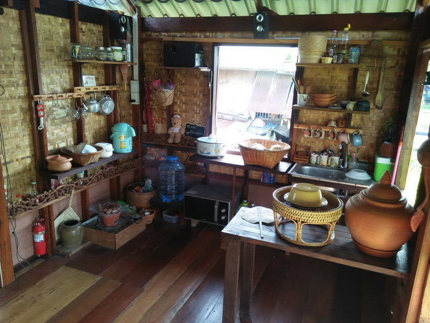

ศิลปะวัฒนธรรมไทย บ้านเรือนไทย
บ้านทรงไทย
บ้านเรือนไทย ถือเป็นหนึ่งในสถาปัตยกรรมไทยที่สวยงามและปราณีต
เป็นเอกลักษณ์ที่ชี้ให้เห็นถึงความเป็นไทยได้อย่างชัดเจน เกิดจากการคิดค้น สร้างสรรค์
และฝีมือของเหล่าบรรพบุรุษที่ร่วมสร้างกันมาตั้งแต่สมัยอดีต แม้ว่าในปัจจุบัน “บ้านเรือนไทย” จะหลงเหลืออยู่น้อย
ซึ่งอาจเป็นเพราะปัจจัยหลายๆ อย่าง เช่น วัสดุที่หายาก และราคาสูง เป็นต้น เด็กๆ
ในยุคนี้บางคนอาจไม่เคยเห็นหรือรู้จัก “เรือนไทย” ด้วยซ้ำไป ซึ่งน่าเป็นห่วงมาก
เพราะอาจจะทำให้สถาปัตยกรรมของไทยแท้ๆ หายไป แต่ก็ยังมีคนบางกลุ่ม บางหน่วยงาน
ที่ต้องการสืบสานศิลปวัฒนธรรมที่คนรุ่นเก่าได้สร้างเอาไว้ ให้ลูกหลานรุ่นต่อๆ ไปได้ดูกัน
โดยมีการนำเอารูปแบบของเรือนไทยไปผสมผสานกับอารคารสมัยใหม่บ้าง หรืออนุรักษ์บ้านเรือนเก่าๆ
สร้างเป็นชุมชนไทยโบราณให้ได้ชมกันบ้าง เช่น ศูนย์ศิลปชีพบางไทร ชุมชนเรือนไทยพัฒนา เมืองโบราณ ฯลฯ
ลักษณะเด่นของ “บ้านเรือนไทย” คือ ที่อยู่อาศัยที่เน้นประโยชน์การใช้สอยและเหมาะกับสภาพภูมิอากาศในประเทศไทย โดยเป็น
เรือนยกพื้นสูง เพื่อป้องกันภัยพิบัติจากน้ำท่วม ในช่วงฤดูน้ำหลาก หากเกิดลมพายุก็สามารถให้ลมพัดผ่านไปได้
ไม่ขว้างทิศทางลม ในขณะเดียวกันเมื่อสภาพอากาศเป็นปกติทั่วไป ใต้ถุนจะกลายเป็นพื้นที่ทำงาน ประกอบอาชีพ อาทิ ทอผ้า
ตำข้าว รวมไปถึงเก็บข้าวของเครื่องใช้ในการทำมาหากิน หรือทำเป็นคอกสัตว์
- เรือนครัว
- ส่วนใหญ่มักสร้างแยกกับตัวเรือนที่พักอาศัย บริเวณหน้าจั่วทั้ง 2 ด้านของห้องครัว
มีการออกแบบโดยทำช่องระบายอากาศเพื่อให้สามารถถ่ายเทกลิ่นอาหารและควันไฟออกจากครัวด้สะดวก
โดยการใช้ไม้ตีเว้นช่อง รวมไปถึงใช้ชายคากันสาดยื่นออกจากตัวเรือน
เพื่อให้สามารถป้องกันแสงแดดและฝนสาดนั่นเอง

ข้อมูลจาก
https://www.bareo-isyss.com/service/architecture/%E0%B8%9A%E0%B9%89%E0%B8%B2%E0%B8%99%E0%B9%80%E0%B8%A3%E0%B8%B7%E0%B8%AD%E0%B8%99%E0%B9%84%E0%B8%97%E0%B8%A2/#:~:text=%E0%B9%80%E0%B8%81%E0%B8%A3%E0%B8%B4%E0%B9%88%E0%B8%99%E0%B8%A1%E0%B8%B2%E0%B8%82%E0%B8%99%E0%B8%B2%E0%B8%94%E0%B8%99%E0%B8%B5%E0%B9%89%E0%B9%81%E0%B8%A5%E0%B9%89%E0%B8%A7,%E0%B9%80%E0%B8%A3%E0%B8%B7%E0%B8%AD%E0%B8%99%E0%B8%84%E0%B8%A3%E0%B8%AD%E0%B8%9A%E0%B8%84%E0%B8%A3%E0%B8%B1%E0%B8%A7%E0%B9%80%E0%B8%94%E0%B8%B5%E0%B9%88%E0%B8%A2%E0%B8%A7